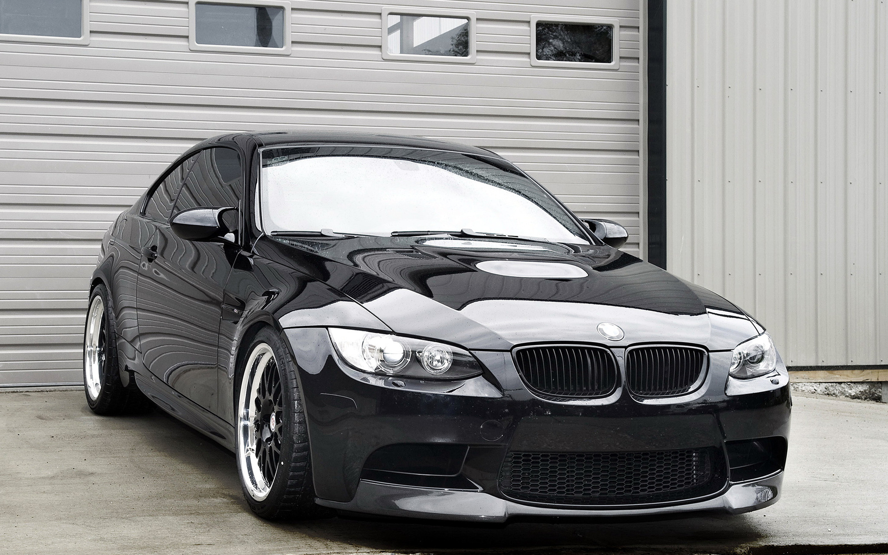

5 октября 1917 года компания получила фирменный логотип. Этот значок был зарегистрирован в Имперском реестре товарных знаков Германии. Он имел круглую форму. Внешнее кольцо ограничивалось двумя золотыми линиями. На нем также присутствовала аббревиатура BMW. Следует подчеркнуть, что тогда действовал закон о товарных знаках, согласно которому цвета Баварии (белый и синий), помещенные во внутреннем круге логотипа, не могли быть расположены в том же порядке, в каком они представлены на государственном флаге, поэтому пришлось использовать обратный. Миф о том, что на логотипе присутствует пропеллер, возникший в 1929 году, компания долгое время не пыталась опровергнуть, а впоследствии и вовсе вышла официальная статья с изображением фирменного знака BMW, наложенного на вращающийся пропеллер[8].
Несмотря на то, что в многочисленных презентациях и рекламе компания большое внимание уделяет экологии и сокращению вредных выбросов, было установлено, что совместно с несколькими концернами (Daimler и Volkswagen) в BMW скрывали технологию очистки выбросов выхлопных газов дизельных автомобилей, позволяющую сократить выбросы вредных веществ. В 2021 году принято решение, что компания заплатит 373 миллиона евро в качестве компенсации за ущерб, нанесенный экологии[26]. В том же 2021 году Deutsche Umwelthilfe подала иск на компанию, поскольку она отказалась выполнять Парижское соглашение по климату 2015 года и законодательство ФРГ, согласно которому должна взять на себя обязательства по обеспечению защиты климата к 2021 году и прекратить использование двигателей внутреннего сгорания к 2030-му[27].
Наиболее популярный на этой модели силовой агрегат – четырехцилиндровый турбированный бензиновый двигатель 2.0 с мощностью 184 или 245 л.с. Он довольно сложной конструкции, но достаточно надёжный. Наиболее слабые места – цепь ГРМ и система питания, чувствительная к качеству топлива. Ресурс цепи не очень большой – 100–150 тыс. км. Вместе с ней может потребоваться ремонт или замена актуаторов VANOS. Шестицилиндровый рядный атмосферный двигатель мощностью 204 л.с. изначально был печально известен по другим моделям BMW – по причине очень большого расхода масла. Однако к моменту начала выпуска 5 серии этого поколения двигатель был модернизирован. Мотор оснащался системами Double VANOS и Valvetronic, а также распределённым впрыском топлива. Система питания в целом надёжная, основная проблема этого двигателя – склонность к перегреву из-за низкого ресурса водяного насоса.
Немецкая компания более известна благодаря своим автомобилям, первый из которых выпущен в 1929 году. В 1927 году в состав БМВ вошла фирма Dixi, выпускавшая автомобили Austin Seven, по образу которых и был создан BMW Dixi 3/15. Максимальная скорость составляла 75 км/ч. Концерн выпустил около сотни моделей. Наиболее известными стали BMW: Это первый автомобиль, имеющий «ноздри», характерные для BMW. Мощность этой модели составляла 30 л. с., а вес был равен всего 820 кг. Производился с 1938 года и отличался измененным бампером, задней частью и дверьми. Модель была выпущена в 1957 году. Стильный кузов сильно отличал ее от предыдущих версий. Мощность двигателя составляла 140 л. с., а максимальная скорость была равна 190 км/ч. Из-за большой стоимости было продано только 412 экземпляров. Появился в 1959 году, когда концерн переживал трудный период. Было принято решение создать модель для массового клиента. Мощность модели составляла 30 л. с. Выпущенная в 1962, стала базой для многих последующих машин. Е12. Начали выпускать в 1972 году. Именно в этом семействе автомобилей появились первые М-версии, которые были доработаны подразделением BMW Motorsport. Первые автомобили этой серии были выпущены в 1999 году. Основное отличие от предыдущих версий в том, что это были внедорожники со спортивным характером. Источник: https://avtoshark.com/article/brand-history/istoriya-bmv/
Главная